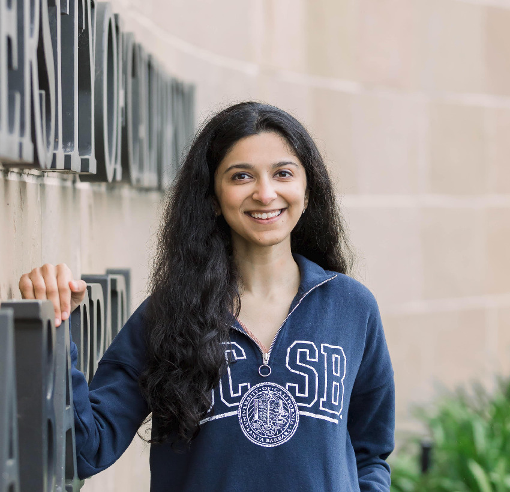
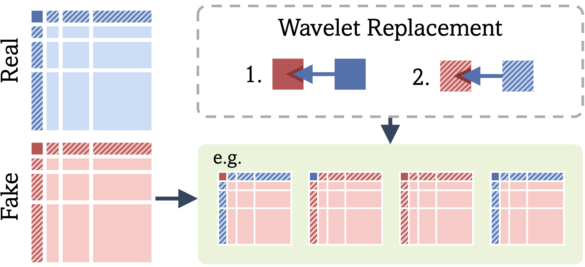
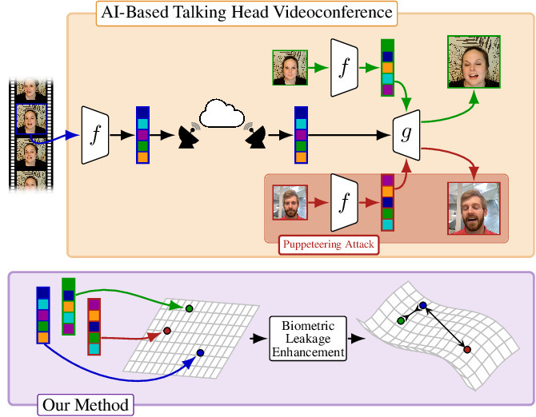
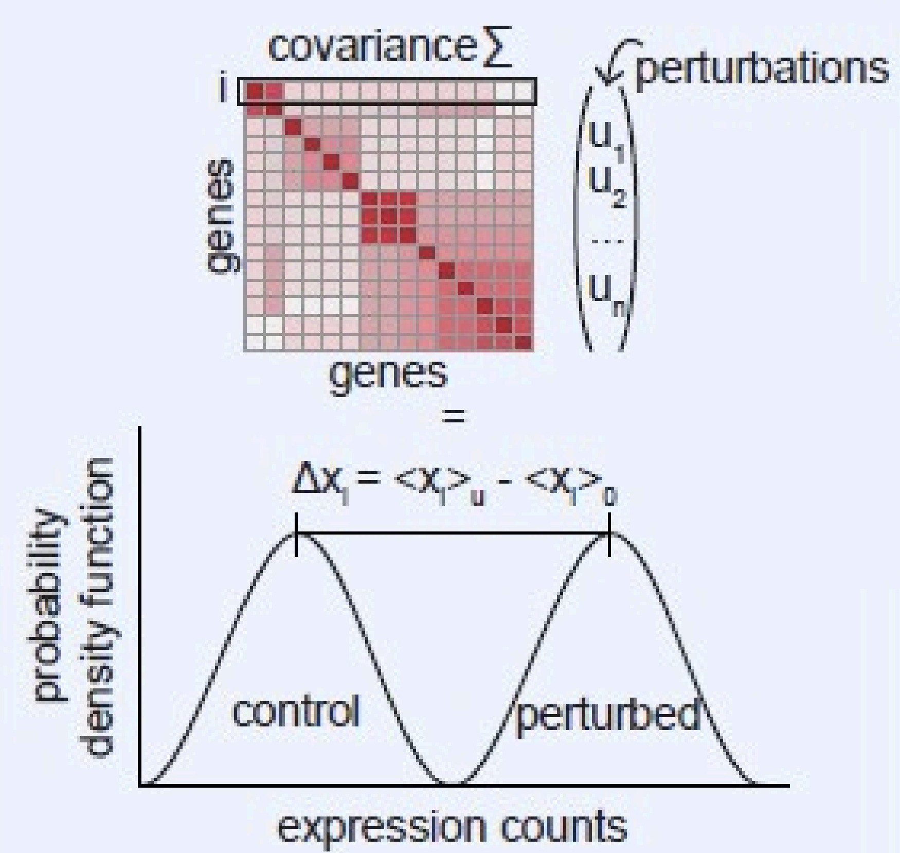
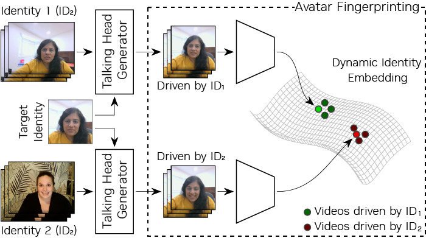
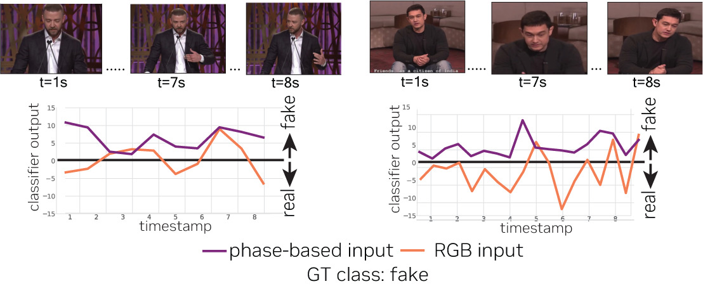
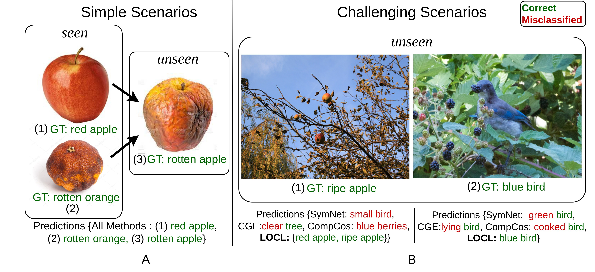
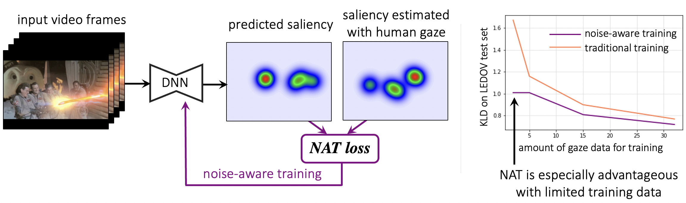
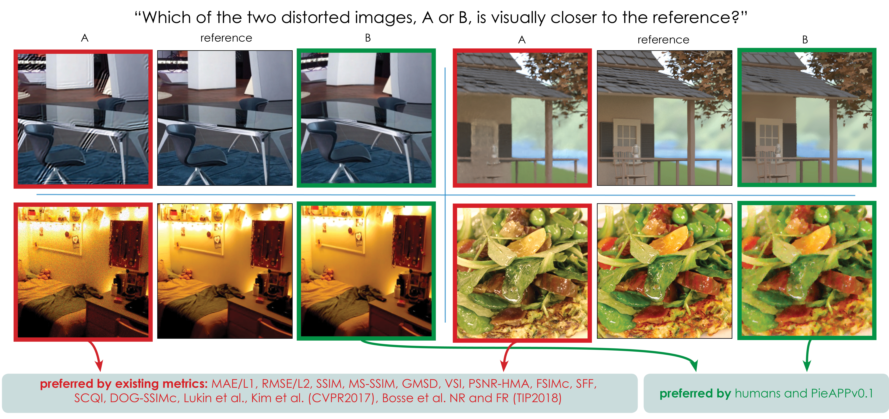
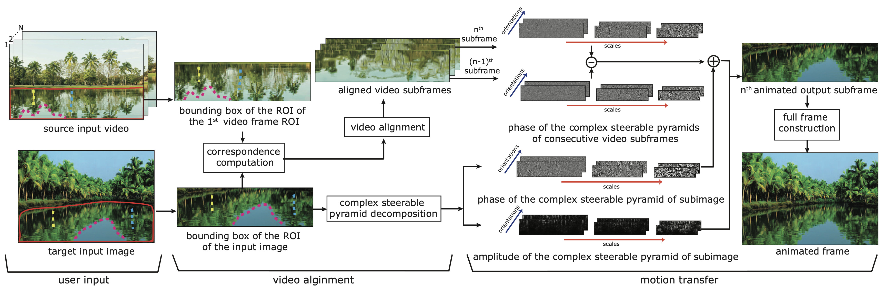

Senior Research Scientist · NVIDIA
I work on algorithms for verifying the trustworthiness of AI-generated content, multimodal machine learning, and computational genomics.
Some of my recent notable research outcomes include avatar fingerprinting for authorized use of synthetic avatars, phase-based deepfake detection, and collaborative efforts on synthetic video detection and computational genomics. During my Ph.D. at UC Santa Barbara, I worked on data-driven methods for evaluating the perceptual quality and authenticity of visual media.

Advances in Neural Information Processing Systems, 2025
This work improves the generalization of synthetic video detectors by training them to focus on intrinsic low-level artifacts shared across generative models, rather than model-specific semantic flaws. Using a forensic-oriented augmentation strategy based on wavelet decomposition, the method achieves strong cross-model detection performance even when trained on videos from only a single generator.

Advances in Neural Information Processing Systems, 2025
This work addresses real-time puppeteering attacks in AI-based talking-head videoconferencing by detecting identity swaps directly from the transmitted pose-expression latent, without relying on reconstructed video. It introduces a pose-conditioned contrastive encoder that isolates persistent biometric cues from the latent, enabling accurate, real-time detection and strong generalization across models and out-of-distribution scenarios.

Research Square (preprint), 2025
CIPHER predicts transcriptome-wide effects of single-cell perturbations by using gene co-fluctuation patterns in unperturbed cells, showing that baseline covariance structure contains substantial information about how cells respond to the genetic perturbation. Across large-scale datasets, it accurately recovers single and double perturbation responses, outperforms standard differential expression methods, and offers an interpretable, theory-grounded framework for functional genomics.

European Conference on Computer Vision, 2024
This work introduces avatar fingerprinting, a method for verifying whether a synthetic talking avatar is using someone’s identity without consent by identifying the person driving its expressions rather than the facial appearance being shown. It also presents the large-scale NVFAIR dataset for the task and demonstrates strong performance, including generalization to previously unseen avatar generation models.

IEEE Transactions on Image Processing, 2024
PhaseForensics detects DeepFake videos by modeling facial temporal dynamics through a phase-based motion representation, which is more robust than conventional pixel- or landmark-based temporal features. By leveraging temporal phase variations in band-pass facial components, it achieves stronger cross-dataset generalization, improved robustness to distortions and adversarial attacks, and state-of-the-art performance on challenging benchmarks like CelebDFv2.

British Machine Vision Conference (BMVC), 2022
LOCL tackles compositional zero-shot learning in realistic, cluttered scenes by using a modular, weakly supervised approach to localize both objects and their attributes before classifying their composition. This localization-driven design substantially improves generalization to unseen object-attribute pairings and boosts performance over prior methods on challenging datasets.

British Machine Vision Conference, 2021
This work improves video saliency prediction by introducing a noise-aware training framework that accounts for frame-specific uncertainty in gaze-derived saliency maps, helping prevent overfitting to noisy supervision. It is particularly effective when observer data is limited, and is supported by a new video game saliency dataset with rich temporal structure and multiple gaze attractors per frame.

Computer Vision and Pattern Recognition, 2018
* Joint first authors
PieAPP is a learning-based perceptual image quality metric that predicts visual differences in a way that closely matches human judgment, without requiring humans to assign explicit error scores. It is trained instead on large-scale pairwise human preferences between distorted images and significantly outperforms prior methods, while also generalizing well to unseen distortions.

Computer Graphics Forum, August 2016, Volume 36, Issue 6
This work introduces a phase-based method for animating still images with subtle stochastic motion, such as rippling water or swaying trees, by transferring motion patterns from example videos of similar scenes. By using phase variations in a complex steerable pyramid rather than optical flow, the approach produces more robust and visually effective animations with fewer artifacts.